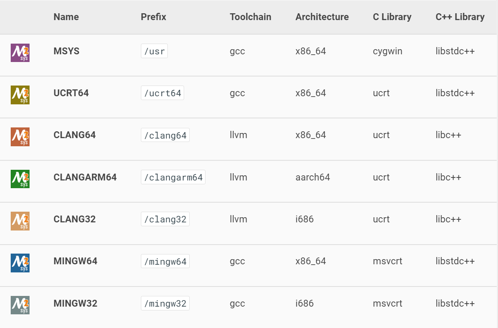

Windows配置管理
安装
磁盘初始化，如果回收磁盘空间重新初始化，则会创建单独的启动分区。
UEFI
以UEFI模式安装系统，启动设备需要使用FAT32文件系统。
问题：无法为安装介质加载驱动程序
切换到USB2.0接口。
管理工具
远程访问
通过会话访问远程主机并执行命令。在目标机器上启用PowerShell远程会话：
Enable-PSRemoting # 以管理员身份运行，网络类型“专用”
由于此计算机上的网络连接类型之一设置为公用，因此 WinRM 防火墙例外将不运行。 将网络连接类型更改为域或专用，然后再次尝试。
$Cred = Get-Credential # 弹出对话框选择账号并输入密码
Enter-PSSession -ComputerName dc01 -Credential $Cred #建立远程登录会话
Exit-PSSession
错误：使用 winrm.cmd 配置
TrustedHosts。
Invoke-Command -ComputerName dc01, sql02, web01 {Get-Service -Name W32time} -Credential $Cred
$Session = New-PSSession -ComputerName dc01, sql02, web01 -Credential $Cred
Invoke-Command -Session $Session {(Get-Service -Name W32time).start()}
Invoke-Command -Session $Session {Get-Service -Name W32time}
Get-PSSession | Remove-PSSession # close established sessions
硬件
主板
wmic baseboard get Manufacturer,Model,Name,PartNumber,serialnumber
CPU
wmic cpu
GPU
dxdiag
nvidia-smi
BIOS
wmic BIOS get name,version,serialnumber
Get-WmiObject -Class Win32_Bios | Format-List -Property *
serialnumber为主机序列号。
内存
wmic MemoryChip get BankLabel,Capacity,MemoryType,TypeDetail,Speed,Tag
虚拟内存配置：如果系统物理内存足够大，可选择关闭系统分页文件：pagefile.sys，swapfile.sys以节省磁盘空间。
磁盘
列出物理磁盘信息：
wmic diskdrive list brief # DeviceID as disks path
wmic diskdrive get Name,Model,InterfaceType,MediaType,SerialNumber,Size,Status
wmic PARTITION
wmic VOLUME
可查看型号（
Model）、序列号（SerialNumber）。
diskpart # 启动磁盘管理交互环境
在交互环境中可执行的命令（通过help查看）：
| 命令 | 说明 |
|---|---|
| `list disk | partition |
| `select disk | parition |
rescan | 重新扫描计算机，查找磁盘和卷 |
clean | 从磁盘清除配置信息或所有信息。 |
compact | 尝试减少文件的物理大小。 |
convert | 在不同的磁盘格式之间转换。 |
create | 创建卷、分区或虚拟磁盘。 |
format | 格式化卷或分区 |
shrink | 减小选定卷。 |
remove | 删除驱动器号或装载点分配。 |
delete | 删除对象。 |
exit | 退出diskpart。 |
磁盘分区类型
如果在MBR分区类型的磁盘上安装了
mbr2gpt可将MBR分区类型的磁盘转换为GPT分区类型，而无需移动磁盘上的数据。
mbr2gpt /validate # 验证选定磁盘可进行转换操作（未指定磁盘则使用安装系统的磁盘）
/convert /disk:N # 验证并执行转换操作
/allowFullOS # 使该命令可用于完整Windows环境（默认仅用于PE环境，推荐）
打开高级启动模式：“设置->更新和安全->恢复->高级启动->立即重新启动”（或按住Shift键点击重启按钮）；在启动选项中选择：疑难解答->高级选项->命令行，然后重新启动电脑，执行上述命令。
电源管理
powercfg /a # 睡眠状态
powercfg -H OFF # 关闭休眠模式(删除系统磁盘下的hyberfi.sys文件)
# /LIST、/L 列出所有电源方案。
网络接口
wmic nic get AdapterType,Name,MACAddress,Speed,NetConnectionStatus
系统管理
系统信息
systeminfo # 输出系统信息[CLI]
msinfo32 # 系统信息[GUI]
ver # [cmd]查看系统版本
winver # [GUI]查看系统版本对话框
wmic COMPUTERSYSTEM
wmic OS
Get-ComputerInfo -Property "*version"
Get-WmiObject -Class Win32_ClassName | Format-List -Property '*'
Computer System Hardware Classes - Win32 apps | Microsoft Docs
Operating System Classes (Windows) | Microsoft Docs
Collecting Information About Computers - PowerShell | Microsoft Docs
系统启动信息
启动配置数据存储编辑器：
bcdedit /delete {uuid}
单独运行 "
bcdedit" 等同于运行 "bcdedit /enum ACTIVE"(列出激活的启动项)。
注册表
Working with Registry Entries - PowerShell | Microsoft Docs
Working with Registry Keys - PowerShell | Microsoft Docs
文件管理
Set-Location [-Path] path # >> cd, chdir
切换当前目录。
读取目录
Get-ChildItem -Recursive -Path *.txt # >> dir
创建文件
New-Item -ItemType "file" -Path . -Name "testfile1.txt" -Value "This is a text string."
New-Item -ItemType "directory" -Path "c:\" -Name "logfiles" # -> mkdir
链接文件
硬链接(Hard link)==只能用于文件==，且不能跨磁盘使用。多个硬链接可以指向同一个文件，并且删除一个硬链接或原始文件，其他硬链接仍然可以访问。删除软链接(Symbolic link)不会影响原始文件，但删除原始文件会使软链接失效。
权限：创建符号链接需要有“
SeCreateSymbolicLinkPrivilege”用户权利，administrators 组成员默认具有此权利。 这个权利可以在“本地安全策略（secpol.msc）\本地策略\用户权利分配”中设置。
New-Item -ItemType SymbolicLink -Path "Link" -Target "Target"
-ItemType SymbolicLink|Junction|HardLink：
-Path：符号链接文件的路径；
-Target：符号链接的目标路径；
-Force：覆盖已有文件。
cmd:
mklink {/D|/H|/J} Link Target
/D：创建目录符号链接(symbolic link)，默认为文件符号链接。/H：创建硬链接(hard link)而非符号链接，目标文件必须位于同一磁盘分区（卷）。/J：创建目录联接(junction)，目录必须位于本地。Link指定新的符号链接名称，Target指定新链接引用的路径 (相对或绝对)。Adobe Reader保存文件时，可能会先删除原有文件，再创建新文件，由此使得指向原文件的硬链接与新文件不同。
查看文件链接
dir path -recurse -force | ?{$_.LinkType} | select FullName,LinkType,Target
dir->Get-ChildItem
复制移动文件
del filename % 删除文件。
dir
rmdir
move
Move-Item -Path C:\test.txt -Destination E:\Temp\tst.txt # move file
Move-Item -Path C:\Temp -Destination C:\Logs # move folder
Move-Item -Path .\*.txt -Destination C:\Logs # wildcard
查找
查找可执行程序
Get-Command dotnet # [gcm] -> "where" in cmd
#CommandType Name Version Source
#----------- ---- ------- ------
#Application dotnet.exe 5.0.152... C:\Program Files\dotnet\dotnet.exe
应用管理
https://dev.to/bowmanjd/chocolatey-vs-scoop-package-managers-for-windows-2kik
Working with Software Installations - PowerShell | Microsoft Docs
Get-CimInstance -Class Win32_Product | Select-Object -Property Name,Vendor,Version
离线安装
appx包
获取appx包
包括AppxBundle和appx包，其中AppxBundle是多个appx包的合集。
- 软件发布者在GitHub等网站提供
appx包的下载（某些可能为将依赖项打包）； - 从应用商店获取应用的分享链接，然后在Microsoft Store - Generation Project查找并下载应用的
appx包及其依赖包。
安装
以管理员身份使用PowerShell命令提供安装选项：
Add-AppxPackage FILENAME.appx
双击软件包即也可执行安装。但离线安装程序无法启动，提示找不到启动文件：可能是由于安装位置
C:\Program Files\WindowsApps没有访问权限。由于以上两种文件格式都是以zip格式封装，因此可以提取其中的appx包内容并手动安装到用户提供目录下。安装如果出现证书无法被信任的问题，需要将
appx包所带证书（通过“属性/数字签名”查看）安装到本机的证书目录下（选择“受信任的xxx”）。
winget
winget list [-q QUERY] # 显示已安装软件列表（包括非winget安装）
--id ID
--name NAME
--source SOURCE # -s 使用指定的源查找程序包
--count # -n 显示不超过指定数量的结果
--exact # -e 使用精确匹配
winget list > winget.installed.txt # 在cmd中执行避免乱码
即使非
winget安装，如果在相应软件源发现匹配软件，仍会显示相应的源（msstore/winget）。
winget search PACKAGE --source SOURCE
winget show PACKAGE --source SOURCE # 显示软件的详细信息
winget search > winget.repo.txt # 在cmd中执行避免乱码
当
show发现多个匹配时，会提示用户提供更精确的包名或限定源。
winget install <package> --source msstore
upgrade
uninstall
winget export --output FILE --source SOURCE
import --import-file FILE
winget source list \ # 列出源的名称和URL
--name winget # 列出指定源的详细信息
winget settings # 打开设置文件进行编辑
Chocolatey
配置
choco source [list] # 列出软件源
choco source add -n=REPONAME -s=url
choco source enable/disable/remove -n=REPONAME
choco config [list] # 列出配置信息
choco config get [--name] CONFIG_NAME
choco config set [--name] CONFIG_NAME --value VALUE
搜索软件
choco list/find/search openjdk[--exact --verbose]
choco list/find/search <appname> --local-only # 查找已安装应用
choco info pkgname
更新
choco upgrade <appname>|all --except="appname,..." # 升级应用
choco outdated # 列出可更新软件 upgrade all --noop
choco pin <package_name> # 固定软件版本
安装卸载
choco install <appname>
choco uninstall <appname>
搭建本地软件仓库
使用Nexus代理
仅代理Chocolaty安装脚本信息（nuget），软件的安装文件仍然需要访问官方资源。因此该代理只是提高对软件仓库的查询速度，而不能离线部署。
Name=chocolatey
Format=nuget
URL=http://172.28.76.100:8081/repository/chocolatey/
Protocl="NuGet V2"
Remote=https://chocolatey.org/api/v2/
Chocolatey Software Docs | Host packages internally
Scoop
如果没有管理员权限，则采用Scoop更加合适。
# Enable execution of PowerShell scripts
Set-ExecutionPolicy AllSigned
Set-ExecutionPolicy RemoteSigned -scope CurrentUser
Invoke-Expression (
New-Object System.Net.WebClient).DownloadString('https://get.scoop.sh')
# or shorter: iwr -useb get.scoop.sh | iex
scoop search [<app>] # 省略app名称将列出仓库中所有可用软件
scoop info <app> # 显示软件信息（含必要配置说明）
scoop install|uninstall <app>
scoop list
scoop status # 检查软件是否有新版本
scoop hold|unhold <app> # 停用/启用更新
scoop update [<app>] # 更新scoop或指定软件
scoop cleanup * # 清理所有旧版软件, 清理指定软件, 清理过期的安装包
scoop cleanup <app>
安装的软件在
~\scoop\apps目录下。
软件源
Scoop buckets by number of apps | scoop-directory (rasa.github.io)
scoop bucket add|list|known|rm <bucket>
下载
利用aria2加速下载：
scoop install aria2
scoop config aria2-enabled true # default: true
scoop config aria2-retry-wait 8 # default: 2
scoop config aria2-split 8 # default: 5
scoop config aria2-max-connection-per-server 8 # default: 5
scoop config aria2-min-split-size 2M # default: 5M
添加库 versions, 可以安装其他（落后的)版本：
scoop bucket add versions
scoop install python@3.7.7
MSYS2
Software Distribution and Building Platform for Windows.
Terminal:
mintty、bash；CLI tools：
git、tar、awk；Develop tools：GCC, mingw-w64, CPython, CMake, Meson, OpenSSL, FFmpeg, Rust, Ruby。

package management：
Pacman（Arch Linux）
winget install msys2.msys2
用法: pacman <操作> [...]
操作:
pacman {-h --help}
pacman {-V --version}
pacman {-D --database} <选项> <软件包>
pacman {-F --files} [选项] [文件]
pacman {-Q --query} [选项] [软件包]
pacman {-R --remove} [选项] <软件包>
pacman {-S --sync} [选项] [软件包]
pacman {-T --deptest} [选项] [软件包]
pacman {-U --upgrade} [选项] <文件>
MSYS2提供模拟文件系统，其物理位置为MSYS2安装目录（可直接从物理系统访问其中内容）。
df -hT /home/gary/
# 文件系统 类型 容量 已用 可用 已用% 挂载点
# C:/msys64 ntfs 931G 221G 711G 24% /
Office
安装office部署工具（Office Deployment Tool）。
配置文件（configuration.xml）
<Configuration>
<Add OfficeClientEdition="64" Channel="Monthly"> <!--PerpetualVL2019-->
<Product ID="HomeStudent2019Retail">
<!-- ProPlus2019Volume|VisioPro2019Volume... -->
<Language ID="zh-cn" />
</Product>
</Add>
<!-- <RemoveMSI All="True" /> -->
<!-- <Display Level="None" AcceptEULA="TRUE" /> -->
<!-- <Property Name="AUTOACTIVATE" Value="1" /> -->
</Configuration>
下载安装文件：
setup /download configuration.xml # run in cmd
安装应用：
setup /configure configuration.xml # run in cmd
https://docs.microsoft.com/en-us/deployoffice/office2019/deploy.
激活Office
# 查看激活状态
cscript "C:\Program Files\Microsoft Office\Office16\OSPP.VBS" /dstatus
# 移除key
cscript "C:\Program Files\Microsoft Office\Office16\OSPP.VBS" /unpkey:F6YYT
RDP
RDPWrap
https://raw.githubusercontent.com/sebaxakerhtc/rdpwrap.ini/master/rdpwrap.ini
VMWare Workstation
VM16 Pro：ZF3R0-FHED2-M80TY-8QYGC-NPKYF
进程管理
查看进程信息：
tasklist /V /FI "ImageName eq winlogon.exe"
/V：显示更多信息
/FI：设置过滤条件（不区分大小写）。筛选器包括：Status（运行状态）、ImageName（程序名称）、Pid（进程号）等等（查看tasklist /?）。
wmic process
wmic可以获得包括命令行信息在内的详细信息。
Get-Process [-Name] [firefox, powershell] # alias as ps
Get-Process DataExchangeHost -Module # need admin privilage
Get-Process WindowsTerminal -FileVersionInfo
Managing Processes with Process Cmdlets - PowerShell | Microsoft Docs
获取当前进程信息？
创建进程
直接在当前终端中运行可执行程序，程序将在前台运行。
新进程与终端分离
Start-Process在新的进程中运行可执行文件（类似Linux exec）。
-
如果指定
-NoNewWindow，则直接在当前Shell中创建新进程，并与当前Shell分离（输入输出默认仍在当前终端，除非添加重定向选项）。 -
反之，首先新建一个Shell进程（桌面环境弹出控制台界面），并在新的Shell环境中运行可执行程序。可执行程序同样与Shell环境分离，因此新的Shell环境在执行启动命令后即退出。
-
在脚本中调用
Start-Process和上述情况一致，执行脚本仅在当前Shell进程中创建一个子Shell环境。 -
如果出现新终端窗口不退出的情况（后台任务未成功与终端分离，使用Terminal作为默认终端时可能出现），可添加
-WindowStyle Hidden（不能与-NoNewWindow同时使用）手动隐藏终端。如果直接从图形界面启动脚本，并使用
-NoNewWindow，导致后台进程无法启动。因为系统分配的终端没有被阻塞执行完脚本内容后直接退出。使用-NoNewWindow会使在当前Shell环境的后台进程也退出。
非Windows平台上子进程总是连接到父进程终端，可以使用
Start-Process nohup命令脱离父终端。
Start-Process -FilePath command \ # -> start*
-ArgumentList ('-jar',"$jEdit", '-settings="$JEditSettings"')\
-WorkingDirectory path \
-RedirectStandardInput "source_file"
-RedirectStandardOutput "$JEditLogs\console.out" \
-RedirectStandardError "$JEditLogs\console.err" \
-PassThru # 返回进程对象
-Verb [RunAs|Print|Open] #
$processOptions = @{...}
Start-Process $processOptions
*：start是Start-Process的别名，与cmd命令用法有区别。start "" "Notepad.exe" # [cmd] 脱离终端，start命令处理引号中的参数
进程启动方式
通过-Verb选项指定-FilePath传递的进程或文件的启动方式（如以管理员运行），通过以下命令查看可执行程序(如PowerShell.exe)可用的启动方式：
startExe = New-Object System.Diagnostics.ProcessStartInfo -Args PowerShell.exe
startExe.verbs # -> open/runas/runasuser
从图形界面启动新进程
对于从图形界面点击脚本，其打开方式默认为终端，因此系统会首先为其创建一个Shell环境再执行程序，类似于调用Start-Process powershell.exe -ArgumentList ('xxx.ps1')，因此还是会弹出临时终端。
对于从图形界面点击.exe程序，则系统直接新建进程（中间不涉及创建Shell环境）。
启动PowerShell任务
Start-Job用于运行PowerShell脚本(-FilePath/-LiteralPath)或命令（-ScriptBlock）。
$job=Start-Job -Name PShellJob -ScriptBlock { Get-Process -Name pwsh } `
-InitializationScript {Import-Module MapFunctions} `
-InputObject "C:\Servers.txt" ` # $input
-ArgumentList powershell, pwsh, notepad ` # 逗号分隔参数列表或数组对象$args
-WorkingDirectory C:\Test\Scripts # PS7 $PWD
Get-Process -Name pwsh &
Receive-Job -Id $job.Id # -Keep保留已获取的输出结果。
Get-Job # 获取当前会话启动的后台任务，可查看任务状态。
Stop-Job/Remove-Job
PowerShell Core 6.0+支持使用
&使启动的进程与当前终端脱离（Start-Job的语法糖）。
任务类型：
RemoteJob：运行在远程会话中的任务；BackgroundJob：运行在独立进程中的任务；PSTaskJob或ThreadJob运行在当前进程的独立线程中的任务。
Invoke-Command支持在本机或远程执行任务。
$s = New-PSSession -ComputerName Server02 -Credential Domain01\User01
Invoke-Command -ComputerName HostName
-FilePath ScriptPath
-ScriptBlock $command
-PSSession $s # 在指定的PS会话中执行命令
-InDisconnectedSession
-AsJob # 运行为后台任务(->Start-Job)
Invoke-Command (Microsoft.PowerShell.Core) - PowerShell | Microsoft Learn
服务管理
Managing Services - PowerShell | Microsoft Docs
网络管理
Performing Networking Tasks - PowerShell | Microsoft Docs
网络连接信息
显示网络信息：
netstat
连接信息：
-a：显示所有连接（包括地址0.0.0.0）和侦听端口。
-b：显示进程对应的可执行程序。
-n：以数字形式显示地址和端口号。
-p PROTOCOL：显示指定协议的连接，包括：TCP、UDP、TCPv6和UDPv6。
路由信息：
-r：路由信息；
统计信息：
-s：显示 IP、IPv6、ICMP、ICMPv6、TCP、TCPv6、UDP 和 UDPv6 的统计信息；
-e：显示以太网统计信息。
arp
arp -agv
ip
ipconfig
ping
tracert
网络配置
netsh.exe COMMAND # netstat help
netsh.exe -f ScriptFile
# COMMAND
# interface - 更改网络接口配置。
# lan/wlan/bridge - 更改有线/无线局域网/网桥配置
# firewall/advfirewall - 更改防火墙(高级)配置
# winsock - 更改套接字配置。
# dhcpclient/dnsclient - 更改DHCP/DNS客户端配置。
# ipsec/http/winhttp/rpc - 更改IPSec/http/RPC配置。
# dump - 显示一个配置脚本。
# exec - 运行一个脚本文件。
# set - 更新配置设置。
# show - 显示信息。
# delete - 在项目列表上删除一个配置项目。
远程管理选项：
[-r RemoteMachine] [-u [DomainName\]UserName] [-p Password | *]。
netsh interface portproxy show [all|v4tov4|v4tov6|v6tov4|v6tov6]
网络共享
权限
网络访问问题
网络连接
问题：Windows网络连接显无法连接网络，实际可以上网？
原因：DNS服务器导致系统的网络探测服务无法正常工作，修改DNS服务器。
网络发现问题
问题：在网络中无法查看开启共享的机器。
原因：目标机器相关服务可能未运行（Function Discovery Provider Host和Function Discovery Resource Publication服务）。
共享权限
访问共享目录的用户（例如everyone）需要同时有本地文件系统的访问权限和共享目录的访问权限。
共享安全问题
Windows 10：0x80070035 找不到网络路径。
[HKEY_LOCAL_MACHINE\SYSTEM\CurrentControlSet\Services\LanmanWorkstation\Parameters]
"AllowInsecureGuestAuth"=dword:00000001
windows 10 0x80070035 找不到网络路径_SOESC.COM-CSDN博客_0x80070035
UWP应用的网络代理
UWP应用（包括Microsoft Store）运行在沙箱环境中，其网络访问与物理机隔离（总是通过本地环回地址转发给物理机），因此无法使用物理机配置的网络代理。
解除应用的本地环回限制
以应用商店程序为例：
-
基于UWP应用可执行文件的所在路径（通过任务管理器找到可执行文件，查看其属性可找到其位置），确定UWP应用包名
Microsoft.WindowsStore_22207.1401.9.0_x64__8wekyb3d8bbwe。 -
通过UWP包名中的App名称
WindowsStore，在注册表中查找应用对应的安全标识符SID（Mappings条目下的名称）或系列名称(Moniker)[HKEY_CURRENT_USER\SOFTWARE\Classes\Local Settings\Software\Microsoft\Windows\CurrentVersion\AppContainer\Mappings\S-1-15-2-1609473798-1231923017-684268153-4268514328-882773646-2760585773-1760938157] "DisplayName"="Microsoft Store" "Moniker"="microsoft.windowsstore_8wekyb3d8bbwe" -
使用
CheckNetisolation程序，传入SID或系列名称解除本地环回限制。CheckNetIsolation.exe loopbackexempt -a/-d -p=$SID -n=$Moniker # 添加/移除例外项 CheckNetIsolation.exe LoopbackExempt -s # 列出已解除的列表
修改系统WinHttp代理规则
netsh winhttp import proxy source=ie # 使用系统设置中配置的代理服务器
netsh winhttp show proxy # 查看当前配置
Windows HTTP Services - Win32 apps | Microsoft Learn
虚拟网络
VMWare虚拟网络
WSL虚拟网络
-
在Windows主机上通过
localhost可访问WSL开放的服务；使用
127.0.0.1不能访问WSL的服务。 -
WSL和Windows主机连接到内置的Hyper-V虚拟网络，因此可使用同一网段的IP地址互相访问；
通过Windows主机的网络管理可以找到Windows主机在虚拟网络中的地址；WSL中
/etc/resolv.conf记载了Windows主机的IP地址（作为WSL的域名服务）；WSL的
/etc/hosts也记录了Windows中手动配置的域名。 -
局域网访问WSL服务：WSL服务需要绑定到虚拟网卡IP地址而非本地环回地址，WSL中开放的端口会通过Windows主机的
wslhost.exe进行端口转发（默认仅监听WSL2的localhost，需要使用以下脚本添加监听地址，或使用WSL Host Patcher自动监听并转发WSL2中打开的端口）。同时，确保Windows防火墙策略允许外部IP访问wslhost.exe应用。# 1. Get IP Address of WSL 2 machine # 2. Remove previous port forwarding rules netsh interface portproxy delete v4tov4 listenport=$host_port listenaddress=$host_addr ... # 3. Add port Forwarding rules netsh interface portproxy add v4tov4 listenport=$host_port listenaddress=$host_addr # (0.0.0.0) connectport=$wsl_port connectaddress=$wsl_addr
Docker on WSL2
通过VMWare NAT网络连接的VM->本地Docker服务：VM需要使用本地主机的物理地址（而非主机在虚拟机子网中的地址）访问Docker服务。虽然Docker已经将Docker服务端口映射到物理端口，但其绑定的IP地址实际不包含虚拟网卡地址（如VMWare虚拟网卡）。因此，VM中发起的请求必须经过源NAT，以访问主机物理地址上的服务。
用户管理
whoami /UPN # User Principal Name (域用户)
/FQDN # Fully Qualified Differentiable Name (域用户)
/LOGONID # 当前用户的登录ID (S-1-5-5-0-28587288)
whoami /USER # 显示用户名与安全标识符 (SID)
/GROUPS # 用户所属组名称、类型、SID 和属性。
/CLAIMS # 当前用户的声明
/PRIV # 当前用户的安全特权
/ALL
[/FO format] # format=TABL(default)|LIST|CSV
[/NH] #
安全
证书管理
通过Windows“运行”对话框（Win+R启动）打开证书管理工具：
certmgr.msc：当前用户证书管理；certlm.msc：本地计算机证书管理（需要管理员权限）；
安装证书
点击证书文件进行安装，可选择存储位置为当前用户或本地计算机（需要管理员权限）。
再证书管理工具中，可通过拖拽更改证书所属路径。
证书类型
| 类型 | 标识符 |
|---|---|
| 个人 | My |
| ==中间证书颁发机构== | CA |
| ==第三方根证书颁发机构== | AuthRoot |
| ==受信任的根证书颁发机构== | Root |
| 企业信任 | Trust |
| 受信任的发布者 | TrustedPublisher |
| 受信任的封装应用安装颁发机构 | TrustedAppRoot+ |
| 受信任的设备 | TrustedDevices*+ |
| 受信任人 | TrustedPeople* |
| 其他人 | ADDRESSBOOK |
| 智能卡受信任的根 | SmartCardRoot* |
| 客户端身份验证颁发者 | ClientAuthIssuer* |
| Active Directory 用户对象 | UserDS* |
| - | AAD Token Issuer*+ |
| 证书注册申请 | REQUEST* |
| 不信任的证书 | Disallowed* |
| 测试版根目录 | TestSignRoot+ |
| 预览版根 | FlightRoot+ |
| 远程桌面 | Remote Desktop+ |
| - | WindowsServerUpdateServices*+ |
| - | eSIM Certification Authorities+ |
| - | Windows Live ID Token Issuer+ |
| - | Homegroup Machine Certificates*+ |
| - | Local NonRemovable Certificates* |
| - | MSIEHistoryJournal* |
*通常为空目录。
+本地计算机目录下才有的类型。